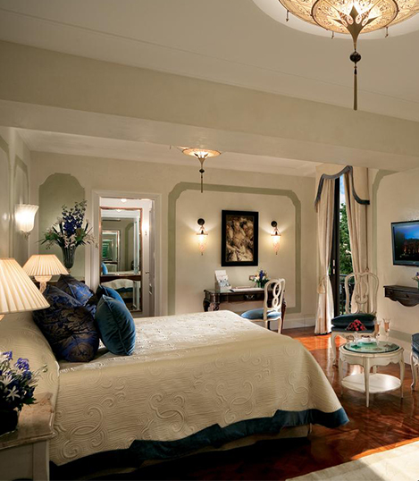
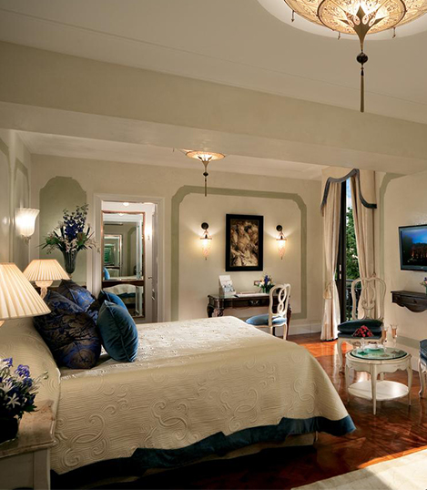

The Hotel
The luxurious Belmond Hotel Cipriani in Venice will play host to you during your stay, and sits close to the city’s bustling centre.
With the heart of Venice right on your doorstep, you’ll get the chance to get lost in between the city’s stunning architecture, take a Gondola ride on the Grand Canal, and explore boutique shopping in the city.
Sitting imposingly on Giudecca island and looking over the water, the Belmond Hotel Cipriani is a luxury 5* property in Venice, located just five minutes away from the city centre by shuttle boat.
Made up of 96 rooms and suites, the accommodation on offer possesses timeless Venetian charm, combining traditional allure with modern comfort and all providing a breath-taking view over hotel surroundings.
The property also boasts Michelin star dining, an Olympic-sized swimming pool, and an al fresco restaurant with dazzling views of the famous St. Mark’s square.
 
